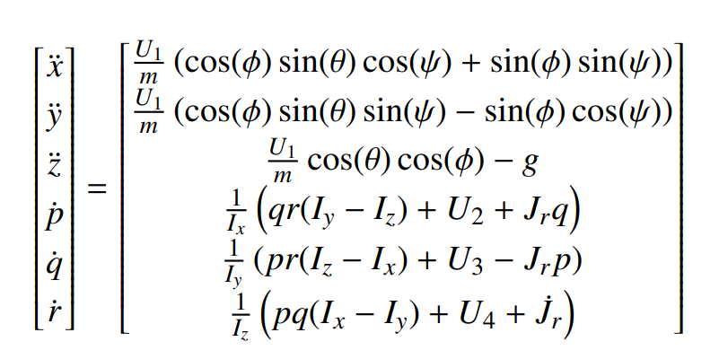
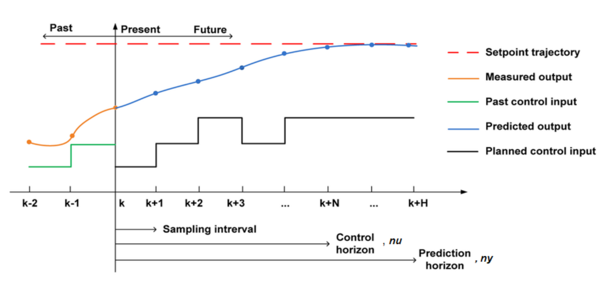
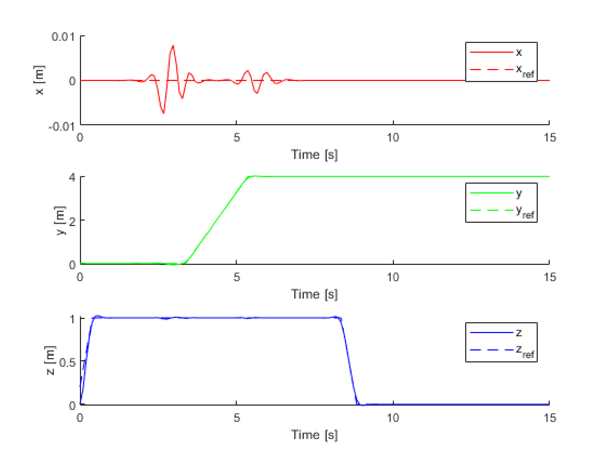

Industrial Mathematics Master's Thesis
Awarded 95% Grade
Polytechnic University of Madrid
Project Objective
The aim of this project was to design and validate an advanced optimal control method based on a non-linear model predictive controller. This approach allows for real-time control optimization and improved performance in dynamic environments.
Methodology
The project followed a systematic workflow, from first-principles modeling to simulation-based validation, to create a robust and efficient control system.

Non-Linear System Modeling:
Developed a high-fidelity, non-linear dynamic model representing the vehicle's 6 Degrees of Freedom. The model accurately captured forces, moments, gyroscopic effects, and actuator dynamics to serve as the predictive core of the controller.

NMPC Formulation & Implementation:
Formulated the optimal control problem using the CasADi framework in C++ and MATLAB. A cost function was designed to minimize tracking error and control effort, subject to realistic state and actuator constraints. The optimization problem was solved using the IPOPT algorithm.

Simulation & Validation:
Conducted extensive simulations to validate controller performance on a simulator developed in MATLAB. Scenarios included aggressive maneuvers, trajectory following under significant external wind loads, and analysis of the controller's sensitivity to model inaccuracies.
Key Technical Outcomes
Complex Vehicle Dynamics: Proved ability to model and control a highly non-linear 6-DOF system through an advanced optimal control approach.
Optimized a trajectory while minimizing control effort and maximizing tracking accuracy.
Real-Time C++: Developed and validated the controller in C++ and MATLAB.
Successfully implemented CasADi (open-source tool for nonlinear optimization and algorithmic differentiation) and demonstrated advanced mathematical knowledge.